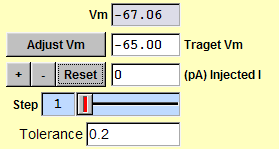

|
The "Vm" box displays the average voltage.
You can ask Ephic to hold the voltage at a specific value. For example, to hold membrane potential at -65 mV, type "-65" in the "Target Vm" box and press "Enter". Click "Adjust Vm" and Ephic will load "/EphicFiles/AdjustVm.set" and inject current to move the voltage to the target Vm. Ephic will keep adjusting injected current until three consecutive recordings is within the tolerance value specified in the "Tolerance" box. You can change the value of tolerance by type the value in the "Tolerance" box and press "Enter". You can adjust the step size of current injection by adjusting the "Step" slider. You can manually type the value of injected current in the "(pA) Injected I" box and press "Enter". You can increase or decrease one step of current injection by clicking "+" or "-". To reset injected current to 0, click "Reset". You can do "Adjust Vm" once a minute so that the membrane potential is constant during the experiment. |
 |